flatMap(Oslo) is a functional programming conference
with focus on Scala and the Java Virtual Machine
SPEAKERS
- 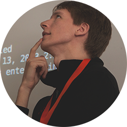
DANIEL SPIEWAK
- 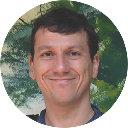
ERIC TORREBORRE
- 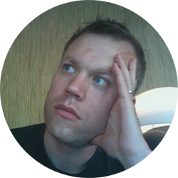
EINAR W. HØST
- 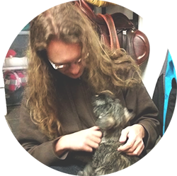
JONAS WINJE
- 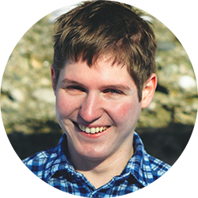
LARS HUPEL
- 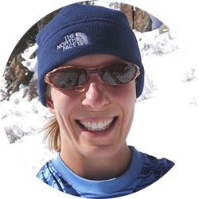
ALISSA PAJER

DMITRY PETRASHKO
- 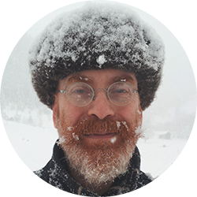
MILES SABIN
- 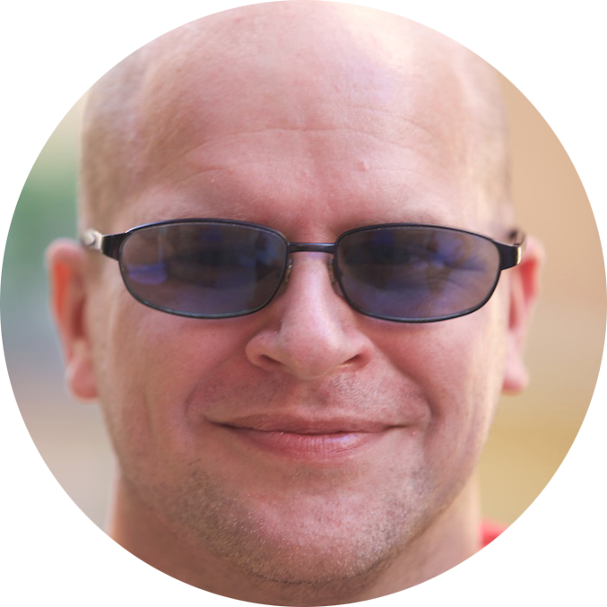
MAGNUS RUNDBERGET
BRENDAN MCADAMS
- 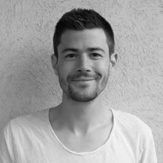
ØYVIND RADDUM BERG
- 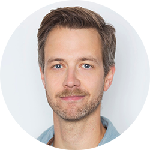
TORBJØRN VATN
- 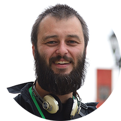
CHRIS FORD
- 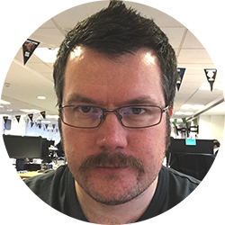
IVAR ABRAHAMSEN
- 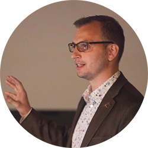
JON PRETTY
MARKUS HAUCK
- 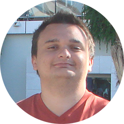
ALEXANDRU NEDELCU
- 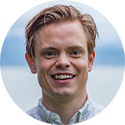
ÓLAFUR PÁLL GEIRSSON
- 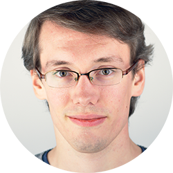
JAN STĘPIEŃ
KATE USTIUZHANINA

ERLEND HAMBERG


flatMap(Oslo) - A functional programming conference, with focus on Scala and the Java Virtual Machine.
On the 27th and 28th of April 2015, a group of enthusiasts organised the fourth flatMap(Oslo) conference. It was 2 amazing days. 100 attendees gathered for technical talks, workshops, discussions and craft beer. Feedback was great, and in 2016 we gather again for the 5th annual flatMap(Oslo). The goal for this year is the same. Small and intimate, but with high ambitions.
flatMap(Oslo) is organised by a group of developers from Arktekk – a small independent consultancy company based in Oslo, Norway. The financial goal for flatMap(Oslo) is to break even. Every penny we make will go into making the best conference possible. Together with our awesome sponsors we work hard to give you a conference tailored for enthusiasts of Scala and functional programming on the Java Virtual Machine.
Please read our Code of Conduct